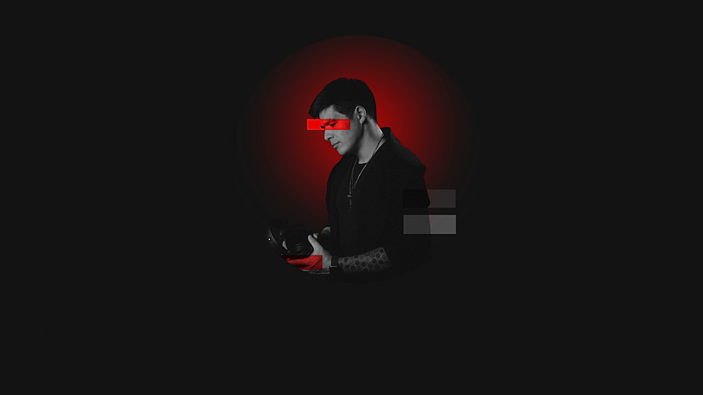
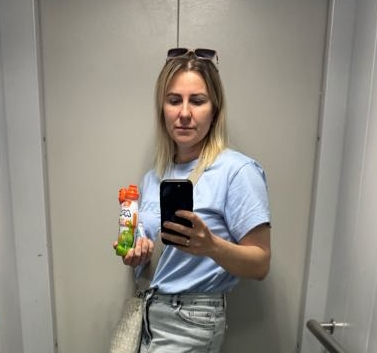
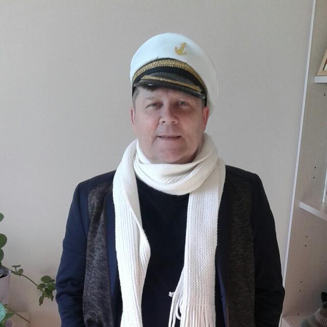

Музыка
Песни и клипы.
Записываю песни, снимаю к ним клипы и постановки — например, поздравления выпускникам от родителей.
PUDiN Media · Невельск · 2026
Снимаю, записываю, свожу и анимирую.
Довожу проект от идеи до финала.
01 / Работы
Музыка · Видео · Анимация
Три направления, в которых я работаю. Нажмите на работу — она откроется на весь экран.
Музыка
Записываю песни, снимаю к ним клипы и постановки — например, поздравления выпускникам от родителей.
Видео
Монтирую документальные ролики об истории компаний для англоязычного YouTube.
Анимация
Рекламные мультфильмы и моушн-дизайн для бизнеса: от сервиса открыток до SaaS и языковой школы.
02 / Обо мне
Невельск
Звукорежиссёр и видеограф. Снимаю, записываю, монтирую и выстраиваю финальный образ проекта — довожу материал до результата, который можно уверенно показать зрителю и заказчику.

REC PUDiN · НевельскA
Пишу песни, записываю и свожу вокал — от минусовки до готового трека.
B
Снимаю и монтирую: праздники, клипы, фильмы из семейного архива и рекламу.
C
Плоская векторная анимация для бизнеса: ролики, заставки, меню для экранов.
03 / Отзывы
Люди о моей работе
Хотим поблагодарить за съёмку подарка от родителей и выпускного вечера. Было приятно видеть внимательное отношение к каждому моменту. Порадовало, как передана атмосфера вечера и эмоции детей и родителей. Всё получилось искренне, без наигранности. Результат превзошёл ожидания — теперь у нас остались ценные воспоминания об одном из самых важных школьных событий.

НатальяМама выпускницы 11 класса
Мы заказывали видеопоздравления для выпускников и остались очень довольны результатом. Понравились идеи, подход к работе и терпение в процессе подготовки. Это, на мой взгляд, важный показатель профессионализма. Работать было комфортно и приятно, у родителей осталось много позитивных впечатлений. Желаем дальнейшего развития и творческих успехов.

ЕкатеринаМама выпускника 11А класса
Если вы хотите сделать по-настоящему запоминающийся подарок родным, себе или близким, который останется в памяти и в сердце, вам точно сюда. Мы делали клип ко дню рождения мамы. Цветы были бы как у всех, тем более она педагог, а значит их и так море. Захотелось подарить нечто большее — историю. Идея была простой и сильной: пролистать её жизнь. В результате клип получился в самое сердце. Чёрно-белые фотографии стали цветными, живыми, и каждая — на своём месте. Огромная благодарность за работу. Настоящий профессионал своего дела.

АленаДочь именинницы
Заказывал музыкальное видео-поздравление для своего друга детства к юбилею. Мы записали песню, сняли исполнение на сцене и собрали всё в одно видео с оживлением архивных фотографий. В итоге получился подарок, который тронул не только именинника, но и всех, кто его видел.

АндрейДруг юбиляра